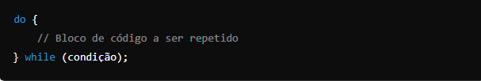

O laço
Abaixo Diagrama do loop do-while
O bloco de código dentro do 'do' é sempre executado pelo menos uma vez, mesmo que a condição inicial seja falsa.
Útil em situações onde a execução inicial do bloco é necessária, como em menus de opções que dem ser exibidos pelos menos uma vez ao usuário antes antes qualquer verificação de saída.
Testa a condição antes de executar o bloco de código. O bloco de código pode não ser executado nenhuma vez se a condição inicial for falsa.
O laço do-while é uma estrutura de controle importante em Java que garante a execução inicial de um código antes da verificação da condição. É particularmente úitl quando é necessário que o bloco de código seja executado pelo menos uma vez, independentemente da condição.